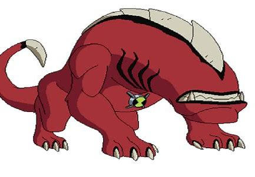
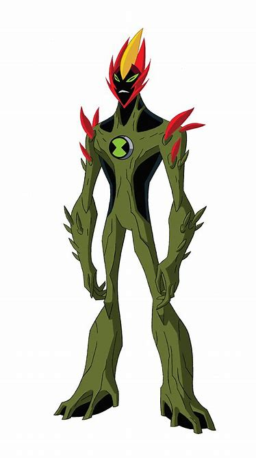
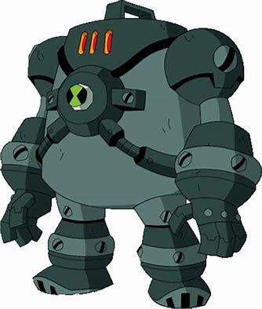

Heat Blast
-Pyrokinesis/Fire
-Pyro Laser
-Fire Tornado Generation
-Fire and Heat Absoprtion
-Pyrokinetic Flight
-Heat Absorption
-Pyro, Cryo, Electricity, and Gas Immunity
-Limited Terrakinesis
-Limited Pyroportation
-Underwater Survivability
-Speed Swimming
Diamondhead
-Crystallokinesis/crystals
-Body Alteration/Weapon Manifestations
-Regeneration
-Space survivability-
-Energy refraction, Absorbtion, and Redirection
-Aging/decaying/time ray Immunity
-Acid immunity
-Heat Resistance
-Crystallization/can turn and cover things in crystal
-Infrared Undetectability
-Magic Resistance

Four Arms
-Enhanced Strength
-Wrestling Proficiency
-Strong/Sharp Teeth
-Snoic Claps
-Shock Waves
-Earthquake Generation
-Wall Climbing
-Heat resistance
-Gas Immunity

Wildmutt
-Sharp Teeth and Claws
-Wall Climbing
-Quill Projections
-Sightless Sensing
-Invisibility Sight
-Enhanced Hearing, Smelling, Digging, and Tracking
-Nightmarish Face Immunity (Can't Be Scared/Phased)
Ultimate Wildmutt
-Sharp Tail and Backspikes
XLR8
-Speed
-Sharp Elbow Blades, Claws, and Feet
-Gas immunity
-Wall and Water Running
-Vortex Creation
-Protective Helmet
-Accelerated Thinking
-Time Travel (with enough energy)
-Speed Mirage Creation


Upgrade
-Technokinesis and Electrokinesis
-Optic Laser (From Face)
-Technological and Mechanical Possession, Enhancement (as in, upgrade things), Repairment and Destruction
-Electroporation
-Regeneration
-Body and Size Alteration
-Arm Extension
-Elasticity/Enhanced felxibility
-Weapon Mimicry
-Tentacles
-Space Survivability
-Light Generation
-Shapeshifting
-Self-Liquefaction


Grey Matter
-Enhanced Intelligence
-Accelerated Synaptic and calculations
-Wall Crawling
-Sharp Teeth
-Slippery Body
-Small space Maneuvering
-Underwater Breathing
Ultimate Grey Matter
-Energy Beams
Stinkfly
-Flight
-Slime and Herbicide Projectiles and Slime Spit
-Methane and Poisonous Gas
-Sharp Claws, Feet, and Tail
-Movable Eyes and 360° Vision
-Wall Crawling
-Toxic Saliva
-Bioluminescent Body


Ghost Freak
-Flight/Levitation
-Deformation and Density Shifting
-Smoke Mimicry
-Instant Regeneration
-Body Possession
-Invisibily/Invisibilty Infusion
-Intangibility/Intangibility Infusion
-Longevity
-Mana Absorption Immunity
-Corrodium Immunity (Corrodium is pretty much a more dangerous uranium)
-Protective and Removable Skin and Moveable Eye
-Tentacles (Mainly under the removable skin but can go through it)
-Life Force Absorption Immunity
-Soul Consumption
-Night Vision
-Electronic Disruption
-Sharp Claws
True Form:
-Telekinesis
-Darkness Empowerment
-Energy Beams
-Skull Rotation
-Sharp Teeth


Ripjaws
-Underwater Breathing
-Underwater Vortex Generation
-Tail Formation (Can turn his feet/legs into a tail and back
-Steel-Bending Jaws (Really Strong Jaws)
-Mouth Expansion
-Strong/Sharp Teeth and Sharp Claws
-Glowing Eyes and Lure
Wildvine
-Chlorokinesis
-Explosive Fruit Pods
-Camoflauge
-Regeneration
-Elasticity
-Body and Size Alteration
-Plant Merging
-Sharp Flytrap, Teeth, and Thron Claws
-Tentacles
-Vine and Thorn Generation
Gas Immunity
Corruptura Resistance

Cannonbolt
-Sphere Transformation
-Environmental Perception (via Spherical Form)
-Enhanced Balance, Ricocheting, Hearing, and Directionality
-Shock Waves
-Tornadoes
-Echolocation
-Energy Deflection
-Sharp Claws, Teeth, and Feet
-Heat and Cold Resistance
-Acid, Lava, Plasma Ball, and Radiation Immunity
-Mobile Invulnerability
-Electrical Empowerment
-Limited Space Survivability
Ultimate Cannonbolt
-Strong/Spiked Shell


Upchuck
-Sold Matter Ingestion
-Energy Ingestion
-Explosive Vomit
-Acid and Slime Spit
-Mouth Expansion and multiple tounges
-Strong Teeth
-Flight (Via Propulsion)
-Sharp Feet and Claws and Strong Teeth
-Swarm Gastronomy (I don't wtf this is)
-Space Survivability
Ditto
-Self-Duplication (Each Ditto Clone Feels The Same Pain and Can Not be Their Own Sentient Being), They Also Have to be One Ditto in Order to Become Another Alien, Can Duplicate Infinitly)
-Sensory Web
-Enhanced Digging
-Underwater Breathing
-Sharp Head Fins and Claws
Eye Guy
-Mátikinesis (Eye Telekinesis and Manuplation I Think?)
-Eye Merging
-Elastic Chest Eye
-Optic, Energy, and Electrical Beams
-Freeze Rays
-Fire Blasts
-Eye Goo
-360° Vision
-Vision Smelling (???)
-Enhanced Hearing
-Sharp Claws

Blitzwolfer
-Enhanced Smelling and Hearing
-Sonic Howls
-Sonic Propulsion
-Sonic Redirection
-Sharp Claws, Teeth, Elbow Spikes, and Shoulder Spikes
-Night Vision
-Corrodium Immunity

Snare-oh
-Shapeshifting
-Elasticity
-Small Space Maneuvering
-Regeneration
-Body Seperation
-Bandage Seperation
-Wall Scaling
-Night Vision
-Underwater Breathing
-Space Survivability
-Gas Immunity
-Corroduim Immunity
Magic Curse Usage
Frankenstrike
-Technokinesis
-Electromagnetism
-Electrokinetic Levitation
-Electrokinesis
-Electrical Redirection
-Space Survivability
-Immense Life Span/h4>
-Heat Resistance
-Corrodium Immunity
Buzzshock
-Electrokinesis
-Technokinesis
-Electric Absorption, Redirection, Teleportation, and Possession
-Electrokinetic Flight
-Sonic Scream
-Self Duplication (with enough power)
-Slime Conductivity


Arctiguana
-Freeze Ray Emission
-Cryoinetic Flight
-Cryo Immunity
-Gas Immunity
-Sharp Teeth, Claws, and Back Spikes
-Wall Crawling
Ultimate Arctiguana
-Ice Cannons
-Ice Shards
-Ice Breath
-Underwater Breathing
Way Big
-Enhanced Strength
-Cosmic Rays
-Sharp Head Fin, Arm and Shoulder Blades
-Space Survivability
-Temperature Resistance
Ultimate Way Big
-Flight
-Cosmic Discs
-Speed Rotation

Spitter
-Slime Spit
-Sharp Teeth
-Body Inflation
-Poisonous Gas Immunity

Eon
-Chronokinesis
-Chronoportation
-Chronothapy
-Technokinesis
-Temporal Consciousness Coversion
-Molecukinesis
-Space-Time Manipulation
-Teleportation
-Dimensional Travel
-Time Portal Creation
-Energy Blasts and Shockwaves
-Enhanced Intelligence



Swampfire
-Chlorokinesis
-Pyrokinesis
-Methane Generation
-Fertilizer Gas Generation
-Sleeping Spores
-Adhesive Mud
-Seed and Vine Generation
-Vine Tentalces
-Regeneration
-Elasticity
-Body Alteration
-Pyrokinetic flight
-Gas Immunity
-Strong Teeth
Blossmed Swampfire
-Vine Whips
-Levitation
-Sharp Arm and Shoulder Spikes
-Sharp Foot Thorns
-Sentient Plant Manipulation
Ultimate Swampfire
-Azur Pyrokinesis
-Methane Projectiles
-Fire Bombs
-Underwater Propulsion
-Pyro Immunity
Echo Echo
-Audiokinesis
-Sonic Screams
-Sonic Redirection and Force Fields
-Self and Object Duplication (Each Echo Echo Clone Can be Their Own Sentient Being (Controlled by The User) and Can Become Other Aliens (Still Controlled by The User), If One Clone is Hurt, Injured, Killed, etc, it Will Not Affect The Other Clones or The User, Can Duplicate Infinitly and Will Not Get Tired, Lose Energy, etc)
-Echolocation
-Vibration Detection and Empowerment
-Levitation
Ultimate Echo Echo
-Duplicating Sonic Disks
-Sonikinetic flight
-Sonic Repulsion and Combustion
-Airwave Generation
-Space Survivability
Humungousaur
-Enhanced Strength
-Stegosauride Features
-Size Alteration and Strength Enhancement (Can Gorw up to 8x Bigger/Stronger)
-Powerful Roar and Tail
-Strong/Sharp Teeth
-Snoic Clap
-Shock Waves
-Earthquake Generation
-Wind and Heat Resistance
-Suction Immunity
-Limited Space Survivability
Ultimate Humungousaur
-Spiked Shell
-Mace Tail
-Missle Generation
-Bone Bullet Projection
Big Chill
-Cryokinesis
-Ice and Wind Breath
-Freezing Touch
-Flight and Levitation
-Intangibility
-Sharp Claws and Feet
-Strong Teeth
-Solid Matter Ingestion
-Gas and Radiation Immunity
-Hypnosis Resistance
-Temperature Resistance
-Space Survivability
-Underwater Breathing
Ultimate Big Chill
-Cryo-Pyrokinesis(Cold Fire and Stuff


Spider Monkey
-Webbing Generation(From Tail)
-Enhanced Reorientation and Hearing
-Web Scaling
-Wall Scaling
-Sharp Teeth
-Sticky Fur
-SKilled Melee Combatant
Ultimate Spider Monkey
-Skilled Hand-to-Hand-Combatant
-Webbing Spit
-Wall Climbing
-Radiation Immunity
-Limited Space Survivability
-Multi-Hinged-Jaws
Metal Legs Version
-Sharp Retractable Spider Legs

Jetray
-Neuroshock Blasts
-Sharp Claws and Teeth
-Space Survivability
-Hyperspace Entrance (Can Fly Fast Enough to Enter Hyperspace in a Few Seconds
-Speed Swimming
-Underwater Breathing
-Heat Resistance
-Fire Generation (via Neuroshock Blasts
-Electricity and Radiation Immunity
Goop
-Indestructibility
-Regeneration
-Gookinetic Shapeshifting
-Slime Generation
-Adhesive and Acidic Slime
-Slippery Body
-Body Alteration and Seperation
-Elasticity
-Levitation and Flight
-Movable Eyes
-Underwater Breathing
-Wall Scaling
-Density Shifting
-Heat Resistance
-Object Mimicry
-Small Space Maneuvering
Chromastone
-Ultraviolet Manipulation
-Dyankinesis
-Energy Absorption, Aura, and Redirection
-Mana Absorption
-Heat Resistance
-Radiation and Electricity/Conductivity Immunity
-Flight
-Light, Rainbow, and Force Field Generation
-Sharp Crystals, Arm, shoulder, and knee Crystals
-Space Survivability
-Xenocite Possession Immunity
-Webbing Dissolving
Brainstorm
-Enhanced Intelligence
-Accelrated Calculations
-Sharp Pincers, Legs, and Spikes
-Mnemokinesis
-Technokinesis
-Electrokinesis
-Electrical Telekinesis, Telepathy, and Force Fields
-Levitation
-Wall and Web Scaling
-Cold Resistance
-Underwater Breathing

Alien X
-Omnipotence
Rath
-Wall Scaling
-Shock Waves
-Powerful Roar
-Strong/Sharp Teeth and Retractable Claws
-gas Immunity
-Space Survivability

Nanomech
-Bio-Electrokinesis
-Size Alteration
-Flight
-Sharp Claws
-Energy Tentacles
-Adaptability
-Technological Expertise and Disassembly
-Technopathy
-Nanochip Queen Control Immunity (Can't robotically/Mechanically/Remotely be Taken Control of because Nanomech is Still Half Human)

Water Hazard
-Hydrokinesis
-Hydrokinetic Flight
-Moisture Absoprtion
-Water Whips
-Bubble Shields
-Sharp Claws, Leg, and foot spikes
-Gas Immunity
-Underwater Breathing
-Radiation Immunity
Ampfibian
-Electrokinesis
-Electroporation
-Electrical Absorption, Redirection, and Telepathy
-Stretchable Arms
-Flight
-Intangibility
-Circuitry Travel
-Energy Shield
-Space Survivability
-Speed Swimming
-Underwater Breathing

Armodrillo
-Terrakinesis
-Enhanced Digging and Jumping
-Shock Waves
-Earthquake and Fissure Generation
-Gas Immunity
-Arm extension
-Sharp Claws
-Drill Hands
-Jackhammer Arms
-Jackhammer Propulsion


Terraspin
-Shell Flight
-Aerokinesis
-Torando Generation
-Air Suction
-Levitation
-Sharp Spinning Arms, Claws, and Teeth
-Retractable Head and Limbs
-Mouth Expansion
-Object Redirection (Via Wind Version)
-Fire Suppression (Via Wind Version)
-Poisonous Gas, Selective Mana, and Selective Magic Immunity

NRG
-Radiokinesis
-Nucleokinesis
-Intense Heat Generation
-Lava Eruptions
-Heat, Cold, Lead, and Radiation Immunity
Outside of Armor
-Shapeshifting
-Flight
-Intangibility
-Light Generation
-Energy Absoprtion and Consumption
-Size Alteration (Via Energy Absorption)
-Underwater Breathing
-Gas Immunity
-Highly Radioactive/Nuclear and Really Hot

Clockwork
-Chronokinesis
-Chronopathy
-Time Travel, Reduction, etc (Time)
-Retrocognitive Projections
-Space Survivability
-360° Head Rotation
-Chronosapien Power Detection
-Temporal Consciousness Conversion
Fasttrack
-Speed
-Pretty Much Just a Worse XLR8

ChamAlien
-Camoflauge
-Sharp Teeth, Claws, and Head Spike
-Retractable Tail Stinger
-Slippery Body
-Wall Scaling
Eatle
-Solid Matter Ingestion
-Laser Beams (After Eating)
-Strong Teeth and Strong/Sharp Horn
-Sharp Claws, Side Horns, Arm and Leg Spikes
-Wall Climbing
-Broken Limb Immunity

Jury Rigg
-Mechanical Intuition
-Technological Disassembly, Repairment, and Modification
-Wall Climbing
-Sharp Teeth, Spikes, Claws, and Tail
-Enhanced Intelligence
-Enhanced Speed (While Breaking or Fixing Machinery and Making Stuff)

Shocksquatch
-Electrokinesis
-Force Field Generation
-Cold and Radiation Immunity
-Sharp Teeth and Horns

Feedback
-Electrokinesis
-Energy Absorption and Redirection
-Radiolocation
-Electrokinetic Levitation and Flight
-Space Survivability
-Sharp Teeth
-Elastic Antannae Tentacles
Bloxx
-Shapeshifting
-Building Block Manipulation
-Elasticity
-Regeneration
-Size Alteration
-Body Alteration, Seperation, and Encasing
-Sphere Transformation
-heat Resistance
-Radiation Immunity
-Space Survivability


Gravattack
-Gravikinesis
-Black Hole, Quasar, and Force Field Generation
-Levitation and Flight
-Speed Reduction
-Orbitakinesis
-Self-Gravity manipulation
-Planetoid Form
-Space Survivability
Ultimate Gravattack
-Sharp Mountain Peaks
Crashhopper
-Enhanced Jumping and Ricocheting
-Hard/Sharp Head
-Strong Knees
-Sharp Claws, Feet, Arm Spikes, Leg Spikes
-Shock Waves
-Wall Climbing
Ball Weevil
-Plasma Ball Generation (Via Plasma Ball: Matter and Energy Absorption
-Plasma Whips
-Sharp Jaws and Horns
-Enhanced Balancing
-Wall Climbing
The Worst
-Indestructibility
-Enhanced Durability
-Heat Resistance
-Acid Immunity

Walkatrout
-Really Slippery Body
-Strong Tail
-Underwater Breathing

Pesky Dust
-Projectile Sleep Dust
-Oneirokinesis
-Dream Viewing
-Dream Entering
-Flight
Mole-Statche
-Comakinesis
-Mustache Reshaping
-Mustache Regeneration
-Mustache Flotation
-Comakinetic Flight
-Skilled Hand-to-Hand Combatant
-Enhanced Digging

Kickin Hawk
-Strong Powerful Legs
-Skilled Hand-to-Hand Combatant
-Enhanced Kicking and Strength
-Sharp Retractable Talons
-Sharp Feet and Elbow Blades
-Shock Waves
-Limited Space Survivability

Bullfrag
-Long Tounge
-Enhanced Jumping and Smelling
-Chest Inflation
-Limited Space Survivability

Astrodactyl
-Flight (Via Jetpack)
-Retractable Wings
-Propulsion Blast
-Energy Weaponry, Whips, Breath, adn Shockwaves
-Internal Star Power
-Star Weaponry
-Space Survivability
-Gas Immunity
-Sharp Claws and Feet
Gutrot
-Chemokinesis
-Benzinikinesis (Gas)
-Gas r, Immunity, and Neutralization
-Chemical Reaction Creation
-Chemical Repository
-Sleep Dust Immunity
-Enhanced Intelligence
-Vast Chemistry Knowledge
-Space Survivability
Atomix
-Atomkinesis
-Nucleokinesis
-Ergokinesis(Energy)
-Photokinesis(Photon/Light)
-Chemical and Heat Generation
-Space Survivability
-Flight
-Jet Feet
-Sharp Shoulder Blades
-Enhanced Strength (Was Able to Kick a Bubble Made of Mana With 5 People in it, Into Orbit/Space Within a Few Seconds)

Toepick
-Nightmarish Face and Sounds
-Acid and Gas Generation
-Sharp Claws

Whampire
-Hypnosis
-Hypnosis Resistance
-Corruptura Projectiles(Via Corrupturas:Object Possession and Undead Possession)
-Energy Absoprtion
-Life Force Draining
-Sonic Explosions
-Space Survivability
-Smoke Mimicry
-Bat Transformation
-Flight
-Infrared and Night Vision
-Sharp Fangs and Claws
-Starts to Die/Decay(idk What to Call it) in the Sun
Overflow
-Hydrokinesis
-Hydrokinetic Flight
-Underwater Breathing
-Speed Swimming
-Underwater Vortex Generation
-Water Blades, Whips, Spit, and Absorption
-Matter State Manipulation
-Ice Generation
-Sharp Claws

Slapback
-Kinetic Self-Duplication
-Mass Amplification
-Weight Amplification
-Density Amplification
-Strength Amplification
-Durability Amplification
-Duplicate Assimilation
-Size Alteration
-Heat and Wind Resistance
-Lava Immunity
-Sharp Teeth
Shock Rock
-Electrokinesis
-Tempestakinesis
-Body Alteration
-Electrical Beams, Constructs, and Shoulder Spikes
-Lightning Waves
-Electrical Orb Projection
-Energy Absoprtion and Redirection
-Weapon Manifestation
-Force Field and Wormhole Generation
-Imagination Constructs
-Arm Extension
Surge
-Xerge Manipulation
-Xerge Constructs
-FLight and Levitation
-Shapeshifting
-Omnilingualism
-Body and Size Alteration
-Optic Laser
-Regeneration
-Force Field Generation
Vilgax/Gax
-Wall Climbing
-Shapeshifting Arms
-Laser Vision/Eyes
-Tentacles
-Sharp Claws, Teeth, Shoulder Spikes, and Knee Spikes
-Fire Generation (Via Laser Vision)
-Skilled Melee Combatant
-Enhanced Strength
-Space Survivability
-Underwater Breathing
-Swordsmanship
-Energy Projection
-Heat Resistance
-Radiation Immunity
-Language Understanding
-Endopathy
-High-Speed Flight
-Optic Blasts
-Wind Breath
-Dimension Jumping
Omnitrix
IMPORTANT: in This Situation, "User" or "The User" Refers to me (ElasticBow92087) in Town But Ben 10 in The Ben 10 Universe/Show
-Transfrom The User Into Aliens
-Provides The User With Neccessary Equipment For Aliens by Destroying and Creating Matter (EX: NRG's Radiation Suit and Goop's Anti Gravity Projector)
-No Time Limit on How Long The User Can be an Alien For (With Master Control or Via Using The Life Form Lock Function)
-Can Constantly Switch Between Aliens by Thinking (With Master Control)
-Can Aquire New DNA The Omnitrix Does Not Already Have (Via Touch or Scanning)
-Universal Translator (If The Language is For Some Reason Unable to be Processed/Translated, Then The User Can Turn Into The Species to Translate Themselves)
-Protects The User in Any Way it Can (EX: Protects The User From Possession, Mind Control (Disables all Restrictions and Adds a Couple Features to The Omnitrix), Feedback From Two Omnitrixs' colliding, Corrodium (Radioactive Toxic Thingy))
-If The Omnitrix Can't Protect The User, It Will Turn The User Into An Alien That Will Help Protect The User
-If Someone Tries To Touch or Cut Off The User's Omnitrix Arm or Omnitrix Itslef, The Omnitrix Will Release a Powerful ELectrical Feedback, Blast, Explosion, etc
-Can Affect an Entire Species (Once Used to Cure an Entire Species' DNA/Bloodline(I Don't Remember What is Was But They Were Dying))
-Can Make it's Own Species' and Can Perfectly Replicate Extinct Species', One-of-a-Kind Aliens/Species', etc.
-Univesal GPS (Universal Range)
-Can be Voice Commanded Only by The User
-Randomizer Function
-Homing Device
-Audio and Visible, Two Way Communication
-Indestructibility and User Protection on a Bare Minimum, Multiversal Scale
-Once The User Turns Into an Alien, They Will Immediatly Know How to expertly Use The Alien and What it Can do
-Ultimate Versions of Aliens (Puts The Alien in a Simulation Where They are Subjected to The Worst Possible Threat/Situations for Theoretical Millions of Years (Transformation Happens in an Instance For The User))
-Alien Fusions
-Can Turn Into an exact Duplicate of The Species The User Scans
-ASK ME ABOUT THIS BECAUSE ITS TOO CONFUSING TO EXPLAIN IN TEXT: Even if The Omnitrix is Somehow Taken Off, it Can Only be Used by The User Unless a Password is Entered (Usually Only by The User)
-Can Change The Gender of The User
-Grows and shrinks to Fit The User Comfortably
-Master Control (Disables all Restrictions and Adds a Couple Features to The Omnitrix)
-Has The Smartest AI in The Ben 10 Universe
-DNA Definition For The Omnitrix: Pretty Much Whatever Qualifies as What Makes The Basic Building Block of a Species (Ex: Sentient Robot's "DNA" Would be Circuits and Stuff That Makes up The Robot)